The One Handed Topspin Backhand-Hitting Stances¶
The One-Handed Topspin Backhand
Hitting Stances
John Yandell
In the last article we looked at the technical elements the players share on the one-handed forward swing, and also, some of the differences between the classical and extreme players. (link.)
Now let's take a look at another complex issue: the hitting stances. When we look at the footage it's quite surprising. The footage, as we would suspect, shows that the top players hit from neutral, open, and closed stances.
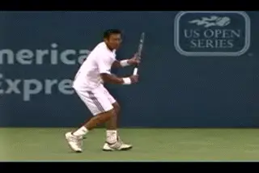
Closed stance dominates on the pro one-handed backhand, but why?
[But what's surprising is that the predominant stance by far is the closed stance, and quite often an extreme version]. It's similar to what we found with the two-handed backhand, only more so. The players sometimes close the stance by stepping across their bodies a distance of up to 4 or more feet.
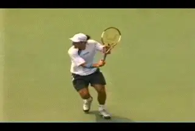
Top players can step across with a stance several feet wide.
This dominance of closed stance hitting goes against virtually every theory of how the one-hander should be taught. But when we look at a few hundred examples from a dozen players in the pro game, the conclusion is inescapable. Grip style seems to be irrelevant. Classical and the extreme players both use the closed stance most of the time, probably on 80 percent or more of their one-handed topspin backhands.
So the closed stance rules on the one-handed backhand in pro tennis. The question is why? On the forehand, the closed stance is a major taboo, because it blocks the use of the shoulders and legs. But what the footage shows is that on the one-hander it's the exact opposite. [The closed stance actually increases the role of both the shoulders and the legs.]
That may seem counterintuitive, so let's look closely at all the stances. Then let's focus on the relationship between the stance, the shoulder turn, and the uncoiling of the legs and see why the top players prefer to step across the ball. Even after many years of video study, the complexity and variation of the shots in the pro game continue to amaze me.
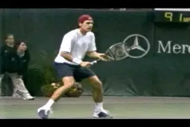
Watch the reverse pivot step and the neutral stance on this center ball.
Neutral Stance
Although the closed stance dominates, you can still find plenty of examples of all the players hitting both neutral and open stance one-handers in various situations.
[One-handed players use the neutral stance, or at least a more neutral stance, around the middle of the court.] This is most true when they begin the unit turn with a reverse pivot, or a step back and away from the ball.
That's similar to what we found with the two-handed backhand. One-handers will also use a neutral stance at times from wider positions, most typically when they are going straight down the line.
And the stroke looks beautiful. There is absolutely nothing wrong with a neutral stance one-hander. Note in the animation how Tommy Haas turns his shoulders 90 degrees or a little more to the net, coils his knees with the step to the ball, and stays upright from the waist. These are basic elements that all players should strive to incorporate.
Open Stance
In addition to the neutral stance, players also use the open stance on certain balls in the middle of the court. This tends to be when they are rushed, for example, after a serve when an opponent hits a deep, forcing return.
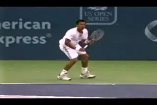
Open stance is also basic, depending on the ball.
Players are sometimes caught off balance trying to recover from the landing on the serve. A deep drive return then forces them to move backwards. So they hit open stance off the back foot since they don't have the time to set up and step in. The same thing can also happen in backcourt exchanges when they are forced backwards by the depth and height of the opponent's ball.
The other instance in which players hit open stance is when they are pushed wide or are on the run. Although this is less common, you can find examples of virtually all the classical and extreme players hitting open stance on the move at various times.
[If you look closely at the animations you can see that this open stance positioning still allows the players to stay upright, make a strong body turn, and execute their normal forward swing pattern. The difference is that the coiling and knee bend are in the back or outside leg, as opposed to the neutral and closed stances where there is usually significant front knee bend. This ability to position to the ball with the rear foot is actually critical for most players to learn alignment and balance, as we'll also see below.]
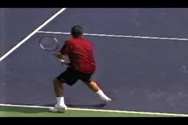
Roger adjusts his set up to make sure he can step across.
Closed Stance Preference
The footage shows that the preference of all the top players is to step across and hit closed stance virtually whenever possible. You can see this in the Federer animation.
Watch how he sets up on this wide ball where he has plenty of time. Rather than moving closer and positioning to step directly forward, it's clear that Roger is stopping at a distance and aligning himself to step across to the hit.
So what dictates the closed stance preference? First take a close look at the alignment of the shoulders. With the closed stance, the players can create much more shoulder turn.
You can see this in the Justine Henin animation that compares the three stances. On the first backhand she is moving back after a serve and will hit off the back foot. Note that she still gets a good shoulder turn, with her shoulders turned somewhat past perpendicular to the net.
The second ball is hit in the center of the court with a slightly closed stance. Notice the turn is about the same, or maybe a little more pronounced.
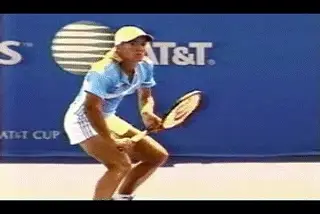
Compare the amount of shoulder turn on the three stances.
Now compare the first two to what happens in the third shot hit from much wider in the court. On this ball Justine is hitting from a very pronounced closed stance. Note how she has turned her shoulders much further, going well past perpendicular, until her torso is at a 45 degree angle to the baseline and her back is partially turned to her opponent.
How Does It Work?
To understand how this works, let's look a little more closely at the relationship between the line of the feet and the line of the shoulders in the closed stance. If you draw a line across the tips of the toes and another line across the shoulders in most cases they are virtually parallel.
The players step diagonally across their bodies with the front foot, and the shoulders come along for the ride and naturally turn on the line of the stance. The angle in both cases can be up to 45 degrees to the baseline, or sometimes a little more. There is no way the players can turn this much in either an open or a neutral stance.
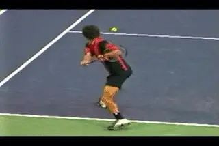
With the extreme stance, the shoulder rotation forward to contact increases.
Now watch what happens as the players start the forward swing from this extreme turn. The shoulders rotate forward into the contact until they are perpendicular to the net, or sometimes a little further in the case of the extreme players. So that's at least 45 degrees more rotation than if they had simply turned the shoulders perpendicular to the net.
What this footage shows is that torso rotation is a big part of the one-handed backhand at the pro level. Even the players who stay more or less sideways at the hit are rotating the hips and the shoulders substantially prior to contact. And the reason they are able to do this is the closed stance.
The total rotation doesn't approach what we see in the modern forehand, but it's still significant. This explains why the players work hard to set up and take that diagonal cross step to the ball.
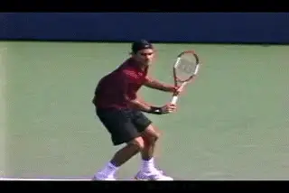
Watch the coiling and uncoiling of the knees in the forward swing.
Uncoiling the Legs
But the shoulder rotation is only one part of the advantage. The other element to look at is the legs, specifically, the knee bend. In addition to more shoulder turn, the cross step creates a much wider base between the feet. The distance between the feet can be 3 or 4 feet, or sometimes more. And this wide base creates the potential to use the legs more dynamically in the stroke.
Compared to the open or the neutral stance the closed stance allows the players to bend the knees more deeply, especially the front knee. Then, with the forward swing, the knees naturally uncoil and the legs straighten out, adding significant energy to the shot.
This is the idea of the kinetic chain--that the energy in the strokes starts with the legs and passes upward through the body segments. So the additional energy from the deeper knee bend passes upward to the torso. Then it is further increased by the extra torso rotation we noted above.
Look at the animation of Federer and Guga. Their backhands may look very different, but watch how the closed stance creates almost the same increased coiling in the shoulders and legs. You can see the explosive power in the forward swing, with the shoulders rotating and the legs uncoiling, driving the players upward onto the toes of their front feet.
We are used to seeing players explode off the court on the forehand due to these same factors of extreme coiling in the shoulders and rear leg. With the one-handed backhand, what we are seeing is just a less extreme version of the same bio-mechanical process. This is the value of the closed stance--it seems to maximize both factors in this stroke.
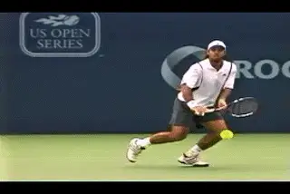
Do you have the strength, balance, and fundamentals to hit closed?
And the Implication?
Executing from the extreme closed stance takes phenomenal strength and also tremendous balance. Note how, in all the examples, the players stay almost completely erect or straight up and down from the waist. This upright torso position is a prerequisite to making the extreme stance work so the shoulders and legs can increase their contributions to the stroke.
Note also what happens with the back leg in the Gonzo animation. It remains behind the player to his right all the way through the extension of the stroke. In fact it actually moves backwards as he initiates the forward swing, and you can see that in other examples throughout this article as well.
The players all reach full extension before the rear foot crosses over, behind the front foot, initiating the recovery footwork. There is a lot of talk about recovery steps in coaching today, and while these steps do occur, many players are swinging the back foot around too soon and destroying the sequence of the swing by trying to force recovery.
Which brings us to the question: should I try to use the wide stance and extreme shoulder turn in my one-hander? And the answer is yes. If you are a great athlete and you have perfect, basic technique--and you have already mastered the open and the neutral stance.
And yes, I realize that, no matter the actual condition of your backhand, I can't stop you from trying, nor do I really want to. But before you run out to the practice court and start trying to emulate Guga's super human cross step, at least ponder these questions.
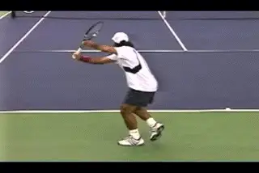
Which ball does he hit neutral, and which does he hit closed?
[How is your unit turn? What is your posture like at the completion of the turn and at the step to the ball? Can you establish the straight hitting arm position and hit through the ball consistently and on time with moderate topspin? How is your extension and can you control your torso rotation? And lastly, can you set up and hit naturally and effectively from an open stance?]
It may seem strange to say this but there is a direct relationship between this last point, your ability to set up in the open stance, and your ability to widen the stance and test some of the advanced techniques we've just analyzed.
Why? As some of our other writers, especially Kerry Mitchell, have pointed out (link) one of the nearly universal flaws in club tennis is the tendency to chase the ball with the front foot.
What this means is the player never gets fully turned, balanced or coiled. Good alignment means having the ability to create a balanced position before the step to the ball. It's critical on the forehand, but equally so on the one-hander.
So when players with poor alignment decide that the key to improving their backhand is to emulate the extreme cross steps and closed stances of the top pros, they aren't solving their problems. They are making them worse.
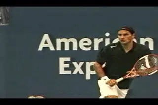
Developing open stance teaches the elements for all stances.
Look at the animation of Fernando Gonzales hitting two backhands from similar positions in the court. Can you tell which stance he will use from his set up position? The alignment and body position is virtually identical. Yet in one he steps forward, and in the other he steps well across. And you know what? He could also hit open from that same position if he so chose.
This is why your ability to hit open stance can be critical. Nothing helps develop this balanced set up position as much learning to hit open stance.
[To hit an effective open stance backhand, you have to get behind the ball and get coiled, balanced and aligned. The top players achieve this same position whether they step in, step across or hit open. But most lower level players don't. Hitting open stance forces them to develop it.]
Most club players reach the ball on the front foot without gathering themselves and establishing this critical position. Usually they are only partially turned, and are also leaning forward and/or over to the side. Since they haven't controlled their momentum or achieved balance, they crash through the shot, over rotate, and swing the rear foot around too soon.
Although most top players rarely hit open stance when they have time to set up and step in or across, one of the very best ways to develop all these elements is to learn to hit open stance yourself from the center of the court on routine balls. It forces you to exaggerate the critical elements of posture and alignment, and actually facilitates the development and use of all the stances from everywhere on the court.
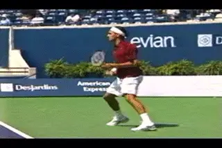
It's hard to beat Federer as a classic model.
The first coach I know who advocated this use of open stance on the one-hander is my old friend, Bob Hansen, coach of the Division 3 powerhouse, the University of Santa Cruz Banana Slugs. He deeply influenced my teaching and also how I hit my own one-hander. His article in our lesson archive is a compact jewel on the subject and highly recommended. (link.)
So assuming you add the open stance set up, what's the best model stroke to emulate? How about Roger Federer hitting a classic, neutral stance topspin backhand from the center of the court? If the average club player had control of the elements in this stroke, he or she would be invincible on the backhand side.
We've looked at most of the factors involved in this amazing stroke before: the compact unit turn and backswing, the full shoulder turn, the straight hitting arm position, a neutral step forward into the shot, the head still, the sideways torso position at contact, and the extended finish with the wrist at eye level. If you are a high level player and have chosen a more extreme grip, most of the same elements apply, with the variations we have discussed previously.
So we're getting close to completing our analysis. Next time, let's look at one more advanced element: the use of hand and arm rotation, a central aspect in the modern forehand that the top players are now using more and more on the backhand side as well.

John Yandell is widely acknowledged as one of the leading videographers and students of the modern game of professional tennis. His high speed filming for Advanced Tennis and TPA have provided new visual resources that have changed the way the game is studied and understood by both players and coaches. He has done personal video analysis for hundreds of high level competitive players, including Justine Henin-Hardenne, Taylor Dent and John McEnroe, among others.
In addition to his role as Editor of TPA he is the author of the critically acclaimed book Visual Tennis. The John Yandell Tennis School is located in San Francisco, California.
← The Grip Shift and Unit Turn | Advanced Tennis Index | Hand and Arm Rotation →